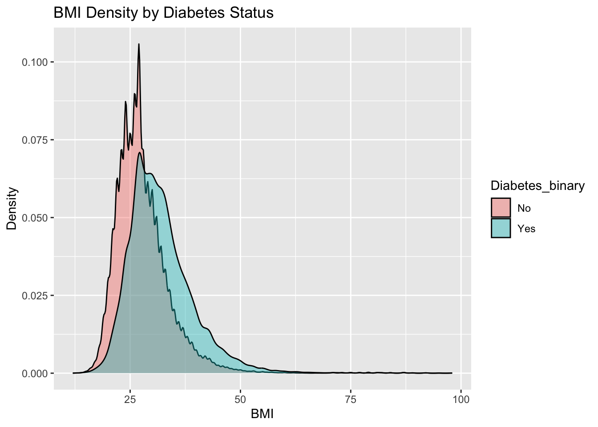
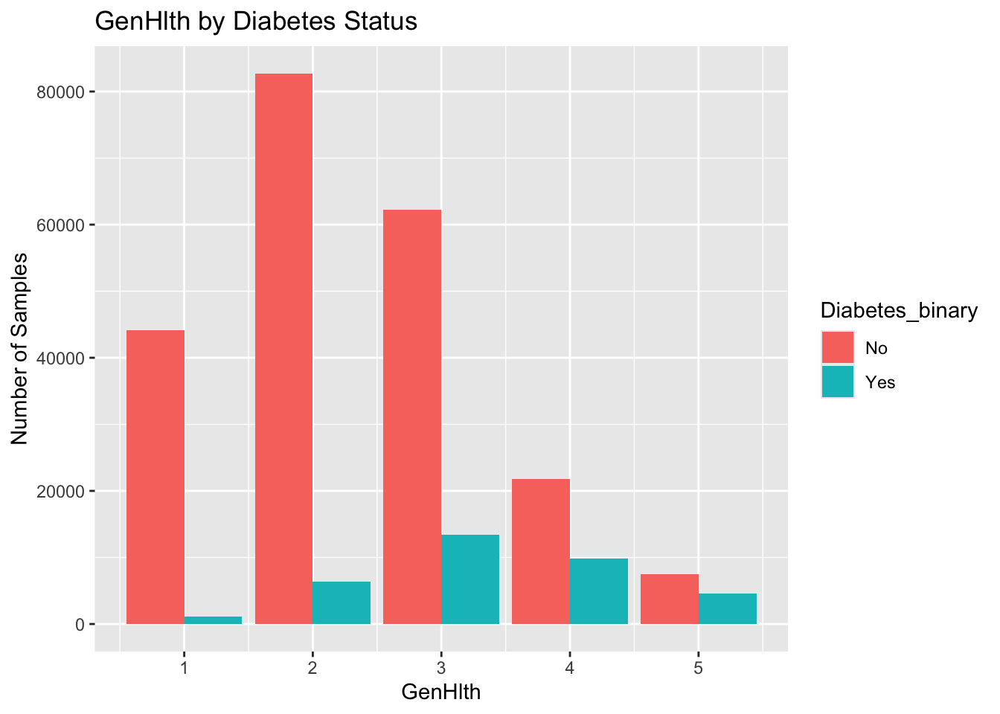
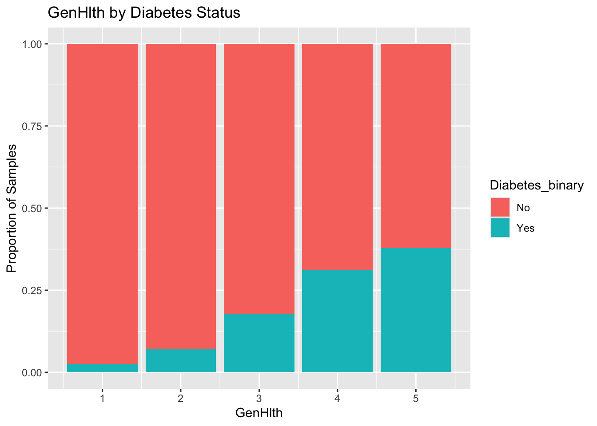

The data that we are using for this project is a Kaggle Date Set investigating diabetes and its connection to a number of different quantitative and qualitative features. In total, the data set contains 21 features ranging from lifestyle decisions to income levels that were recorded in a survey performed by the CDC and a target variable of whether the survey respondent has diabetes. The dataset contains 253,680 survey responses and is not balanced.
Of the 21 available features, 5 were selected to investigate and use in our models. These 5 features include:
BMI: Body Mass Index of the individual (numeric)
PhysActivity: Indicator of whether the individual has partaken in physical activity in the past 30 days (encoded 0 = no and 1 = yes)
AnyHealthcare: Indicator of whether the individual has any kind of health care coverage (encoded 0 = no and 1 = yes)
Smoker: Indicator of whether the individual has smoked at least 100 cigarettes in their life (encoded 0 = no and 1 = yes)
GenHlth: Response of individual when asked to rate general health on scale of 1-5. (1 = excellent to 5 = poor)
The goal of this project is to investigate these variables and their relation with out target variable:
Diabetes_binary: Whether or not the individual has diabetes. (encoded 0 = no diabetes and 1 = prediabetic or diabetic)
First, we will perform EDA. The purpose of EDA is to learn more about the distribution of the selected features and how features might interact with our target variable and other features in the model.
After investigating these relationships, we will move on to our modelling step and build models that use the 5 features to predict whether or not in individual is diabetic. We will investigate multiple types of models and parameters of these models and compare model performance on a test set of data. Once we find an optimal set of parameters, we produce a champion model which can be used for future prediction.
EDA
Package Imports
First, we can import the necessary packages we need. Since we are working in the tidyverse, we will go ahead and load the tidyverse package to our session. We are also going to use the psych package to help out with EDA steps like doing rough distribution checks.
library(tidyverse)
── Attaching core tidyverse packages ──────────────────────── tidyverse 2.0.0 ──
✔ dplyr 1.1.4 ✔ readr 2.1.5
✔ forcats 1.0.0 ✔ stringr 1.5.1
✔ ggplot2 3.5.2 ✔ tibble 3.2.1
✔ lubridate 1.9.4 ✔ tidyr 1.3.1
✔ purrr 1.2.0
── Conflicts ────────────────────────────────────────── tidyverse_conflicts() ──
✖ dplyr::filter() masks stats::filter()
✖ dplyr::lag() masks stats::lag()
ℹ Use the conflicted package (<http://conflicted.r-lib.org/>) to force all conflicts to become errors
library(psych)
Attaching package: 'psych'
The following objects are masked from 'package:ggplot2':
%+%, alpha
Data Preprocessing
Now that we have the necessary package loaded to perform EDA on our data, we will move on to loading in and preprocessing our data. There is one main preprocessing step that is needed for this data, and that is changing categorical and binary features to factors. The features that we will be changing to factors are:
PhysActivity: Indicator of whether the individual has partaken in physical activity in the past 30 days (encoded 0 = no and 1 = yes)
AnyHealthcare: Indicator of whether the individual has any kind of health care coverage (encoded 0 = no and 1 = yes)
Smoker: Indicator of whether the individual has smoked at least 100 cigarettes in their life (encoded 0 = no and 1 = yes)
While GenHealth is categorical in a way (with numeric 1-5 being interpreted as a different category of one’s view of their health), I have decided to maintain this feature as integer due to the ordinal nature of the feature in hopes that the model is able to capture this ordinality. Also for general interpretability, a 1-5 rating is fairly simple to interpret as long as we keep in mind that 1 is the most healthy and 5 is the least.
# Read in datadata <-read_csv(file ="data/diabetes_binary_health_indicators_BRFSS2015.csv")
Rows: 253680 Columns: 22
── Column specification ────────────────────────────────────────────────────────
Delimiter: ","
dbl (22): Diabetes_binary, HighBP, HighChol, CholCheck, BMI, Smoker, Stroke,...
ℹ Use `spec()` to retrieve the full column specification for this data.
ℹ Specify the column types or set `show_col_types = FALSE` to quiet this message.
# A tibble: 6 × 6
Diabetes_binary BMI PhysActivity AnyHealthcare Smoker GenHlth
<fct> <dbl> <fct> <fct> <fct> <dbl>
1 No 40 No Yes Yes 5
2 No 25 Yes No Yes 3
3 No 28 No Yes No 5
4 No 27 Yes Yes No 2
5 No 24 Yes Yes No 2
6 No 25 Yes Yes Yes 2
Great, the data turned out just as we expected.
Missingness and Distribution
Next, we are going to check our data for missing values to ensure we have a complete dataset and don’t have a need to impute values.
# Describe data using psych decribe to check missingness and realismdescribe(model_data)
Since we know that the we are expecting 253,680 samples in our data and n = 253,680 for each of our features, it looks like we have no missing values for any of our features. Additionally, the rough distributions of our numeric variables look to be reasonable. The only thing we might want to note is the max of the BMI feature. A BMI of 98 is extremely high so it is possible we might have outliers here. As for the binary features, we can interpret 1 as No and 2 as Yes since the as.factor() function alphabetically assigns factor levels. Everything looks to be reasonable for these as well, but it is worth noting that this dataset is heavily unbalanced in our target variable, with a mean of 1.14. This could influence model performance down the road as the model will be shown significantly more negatives than positives.
Categorical Features
For the next step of EDA, we will go ahead and make contingency tables for each of our categorical features in relation to our target variable in an effort to see if we can spot any interactions between each of the categorical features and our target. Since the number of samples is large, it might be easier to interpret these contingency tables if we turn them into proportions.
# Create proportional contingency tables for each categorical featureprop.table(table(model_data[, c("Diabetes_binary", "PhysActivity")]))
PhysActivity
Diabetes_binary No Yes
No 0.19197808 0.66868890
Yes 0.05147824 0.08785478
Smoker
Diabetes_binary No Yes
No 0.48970356 0.37096342
Yes 0.06712788 0.07220514
These contingency tables are a little difficult to interpret considering some of the features and our target are fairly unbalanced, so let’s try to investigate this in a slightly different way. We are really interested in seeing whether a larger than expected proportion of a specific class of the feature has diabetes. To help with this, we can investigate this through the lens of conditional probabilities. For a feature to have predictive power, we would expect \(P(\text{Diabetes = Yes | Feature = Yes}) \neq P(\text{Diabetes = Yes | Feature = No})\). In other words, the proportion of individuals with diabetes should differ between feature categories. We can investigate these conditional probabilities next.
# Create conditional tables for each categorical featuremodel_data |>group_by(PhysActivity) |>summarize(prop_diabetes =mean(Diabetes_binary =="Yes"))
# A tibble: 2 × 2
PhysActivity prop_diabetes
<fct> <dbl>
1 No 0.211
2 Yes 0.116
# A tibble: 2 × 2
Smoker prop_diabetes
<fct> <dbl>
1 No 0.121
2 Yes 0.163
These tables tell a more clear story regarding the predictive power of the features at hand. We can note that each of the categorical features seems to show slight differences in conditional probabilities. PhysActivity seems to be the strongest with the conditional probability of those individuals who did not partake in physical activity having diabetes being significantly higher than those that did. Smoker shows the second largest difference with smoking more than 100 cigarettes leading to a higher conditional probability. Finally, healthcare shows a minimal difference in probability with those having access to healthcare being slightly more likely to have diabetes. For the healthcare feature, it is worth noting that this is likely not causality since those who do not have access to healthcare might be living with undiagnosed diabetes or those that have diabetes are more likely to ensure to maintain healthcare in order to maintain treatment of their chronic condition.
Numeric Features
Next, we will look at the two numeric features we are planning to use in our model. For these, we should be able to create some tables and plots that might help us better understand the relationships at play.
First, we will investigate the relationship between BMI and diabetes. First, we can create a table breaking down the summary statistics of BMI by diabetes status. Then, we can use a density plot to see how the density of BMI might differ for those that have diabetes vs. those that do not.
# Summarize BMI based on diabetes statusmodel_data |>group_by(Diabetes_binary) |>summarise(mean_BMI =mean(BMI),sd_BMI =sd(BMI) )
# A tibble: 2 × 3
Diabetes_binary mean_BMI sd_BMI
<fct> <dbl> <dbl>
1 No 27.8 6.29
2 Yes 31.9 7.36
# Density plot filled by diabetes statusmodel_data |>ggplot(aes(x = BMI, fill = Diabetes_binary)) +geom_density(alpha =0.4) +labs(title ="BMI Density by Diabetes Status", x ="BMI", y ="Density")

Based on the table, we can see that the mean BMI for those with diabetes is slightly higher than those without. Interestingly, the spread of BMI for those with diabetes also seems to be slightly higher as demonstrated by the higher standard deviation. The density plot confirms these observations as the density plot of those with diabetes appears to be shifted to the right and wider than the density of those that do not have diabetes.
Next, we will look at our GenHealth feature. We can perform the same process here, except instead of using a density plot, it might be helpful to use a bar chart of the proportions since the feature includes only integer values between 1 and 5.
# Summarize GenHlth based by diabetes statusmodel_data |>group_by(Diabetes_binary) |>summarise(mean_BMI =mean(GenHlth),sd_BMI =sd(GenHlth) )
# A tibble: 2 × 3
Diabetes_binary mean_BMI sd_BMI
<fct> <dbl> <dbl>
1 No 2.39 1.02
2 Yes 3.29 1.01
# Plot double bar graph of GenHlth by diabetes statusmodel_data |>ggplot(aes(x = GenHlth, fill = Diabetes_binary)) +geom_bar(position ="Dodge") +labs(title ="GenHlth by Diabetes Status", x ="GenHlth", y ="Number of Samples")

This tells us a similar story to BMI, as those with diabetes ranked themselves as less healthy on average than those without diabetes, as shown be the higher mean value for GenHlth. However, it is worth noting that the two groups do not demonstrate the difference in spread that was noted with BMI. The bar graph confirms this as the “peak” of the distribution appears to be shifted to the right.
For this feature, it might also be helpful to look more into the conditional probabilities as well. Specifically, it might be interesting to look at \(P(\text{Diabetes | GenHelth)}\). To do this we can use a proportional bar graph.
# Plot bar graph of conditional proportions for each GenHlthmodel_data |>ggplot(aes(x = GenHlth, fill = Diabetes_binary)) +geom_bar(position ="fill") +labs(title ="GenHlth by Diabetes Status", x ="GenHlth", y ="Proportion of Samples")

This shows us more interesting interactions between these two variables as those that rank themselves in poorer general health are significantly more likely to have diabetes than those that do not.
That wraps up the EDA portion, so now let’s move on to the models! Fisrt, since we made some changes to the dataset, we will go ahead and save it as an RDS file, so we can easily access it in our modeling notebook.
# Save as an RDSsaveRDS(model_data, file ="data/model_data.RDS")